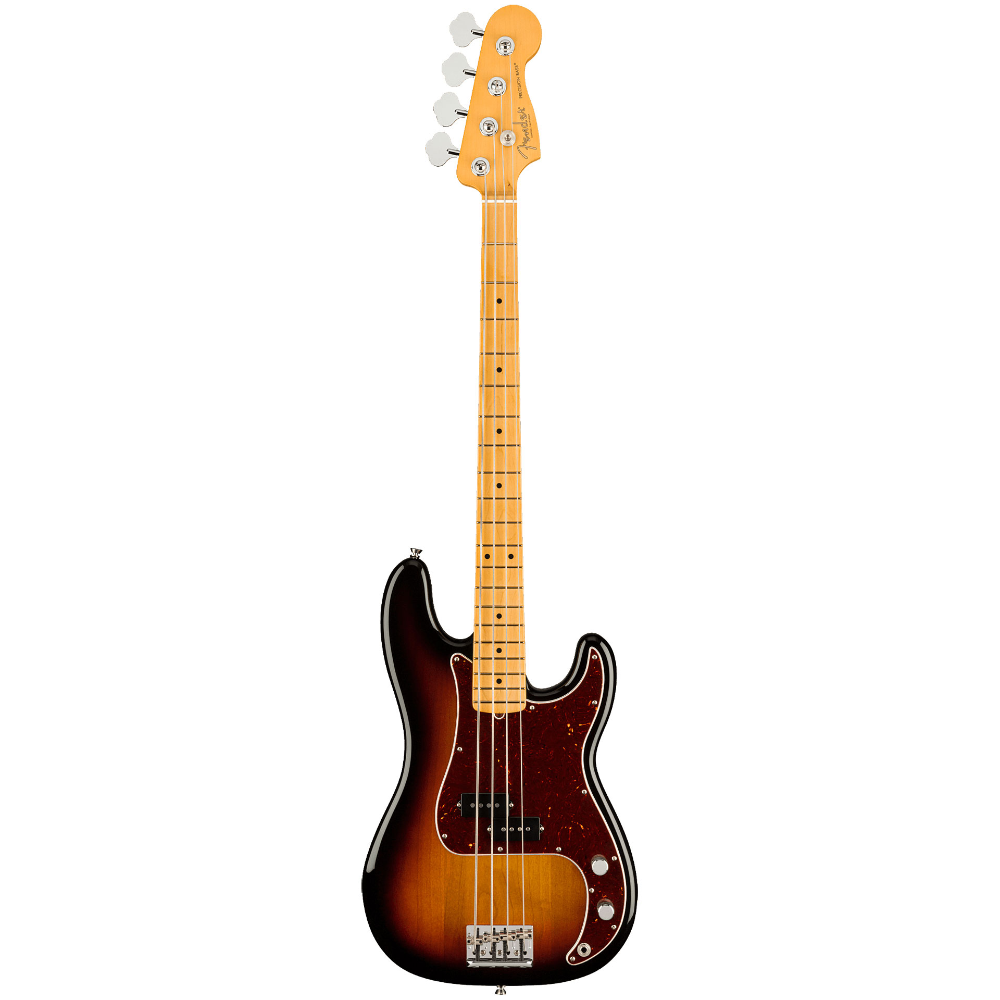
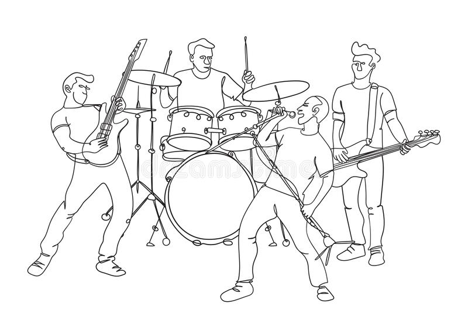

Experiencias ajenas

Fui por mucho tiempo músico
especializandome en el bajo eléctrico
como instrumento principal
Música a la que me dedico

He tocado en multiples bandas de Rock y Metal con el fin de sentirme relajado y tranquilo, como hobbie y diversión